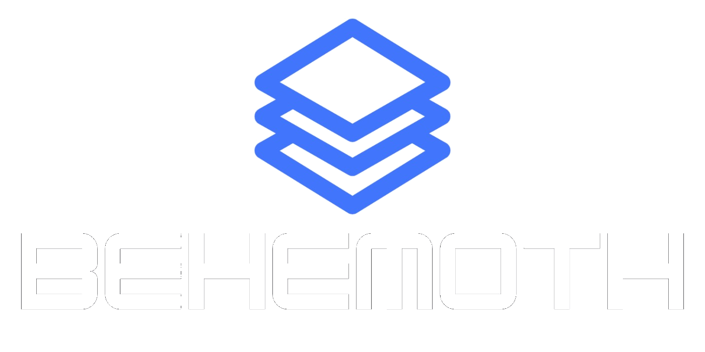

Sistema operacional inteligente para empresas
Pare de administrar no escuro.
A Behemoth transforma dados espalhados em clareza para você entender o negócio, priorizar o que importa e decidir com segurança.
✓ Uma visão do negócio inteiro
✓ Próxima ação mais clara
Bom dia, Mariana
O que precisa da sua atenção?
Leitura da Behemoth AI
Seu faturamento cresceu 12,8%, mas custos com equipe subiram 18%. Revise a alocação do time comercial para proteger sua margem.
Ver recomendaçãoPróximas açõesVer todas
- Revisar margem do serviço premiumPrioridade alta · Hoje
- Reativar clientes inativos14 oportunidades · Esta semana
- Preparar reunião de metasSegunda-feira · 09:00
Decisão sugerida4 ações organizadas por impacto
O problema não é falta de informação
É não saber o que ela quer dizer.
A empresa já tem dados. Eles estão espalhados em planilhas, WhatsApp, agenda, sistema financeiro e na cabeça do dono.
A Behemoth junta os sinais e traduz tudo em uma leitura simples do negócio.
Entenda a visão geral01Antes
“Eu acho que
está indo bem.”
está indo bem.”
Decisões tomadas com sensação, urgência e memória.
5 sistemas abertos12 decisões pendentesSem visão do todo
02Depois
“Minha margem é
26,6%. Esta é a próxima ação.”
26,6%. Esta é a próxima ação.”
Números claros, problemas identificados e prioridades definidas.
✓ Financeiro conectado✓ Equipe acompanhada✓ Próximo passo recomendado
Uma visão. Todos os sinais.
A empresa inteira,
sem o ruído.
Conecte o que já existe e enxergue a operação como um organismo: dados que conversam, prioridades que aparecem.
Core
Financeiro
Faturamento, custos, lucro, margem e fluxo de caixa numa mesma leitura.
Retorno
Pessoas
Custo, entrega e potencial de cada função na operação.
3,2xretorno médio
por pessoa
por pessoa
Relacionamento
Clientes
Saiba quem está ativo, quem parou e onde existe oportunidade.
186clientes ativos
Inteligência
Agentes de IA
Automatize tarefas repetitivas com contexto real do seu negócio.
Ver a inteligênciaRitmo de gestão
Metas & rotina do dono
Objetivos, reuniões, pendências e decisões para hoje, esta semana e este mês.
Meta do trimestre72%
12 dias restantes+14% vs. trimestre anterior
Inteligência que interpreta
Não basta mostrar
o número.
É preciso explicar o que ele significa e transformar o sinal em uma decisão possível.
Quero ver a BehemothBehemoth AIAnalisando sua operação
onlineFaça uma pergunta sobre seu negócio

Clareza para decidir.A jornada Behemoth
Da informação espalhada à próxima decisão.
Continue rolando. A visão se organiza em camadas até a operação revelar o que realmente precisa da sua atenção.
Role para mover a visão01
Conecte
Tudo que importa para o negócio reunido no mesmo lugar.
02
Enxergue
Uma visão do todo para parar de procurar respostas em cinco sistemas.
03
Interprete
A IA traduz tendências, riscos e oportunidades em linguagem simples.
04
Decida
A próxima ação aparece organizada por impacto, urgência e contexto.
O que muda na prática
Hoje
Saúde do negócio
Um resumo objetivo do que merece sua atenção agora.
Esta semana
Ritmo de gestão
Metas, reuniões e clientes em risco no radar certo.
Este mês
Crescimento com controle
Decisões melhores, margem protegida e operação no ritmo.
O próximo passo começa aqui
Mais clareza.
Menos peso.
Conheça a Behemoth e veja como transformar a operação da sua empresa em decisões mais simples.
Conheça a BehemothO sistema operacional
inteligente da sua empresa.
inteligente da sua empresa.